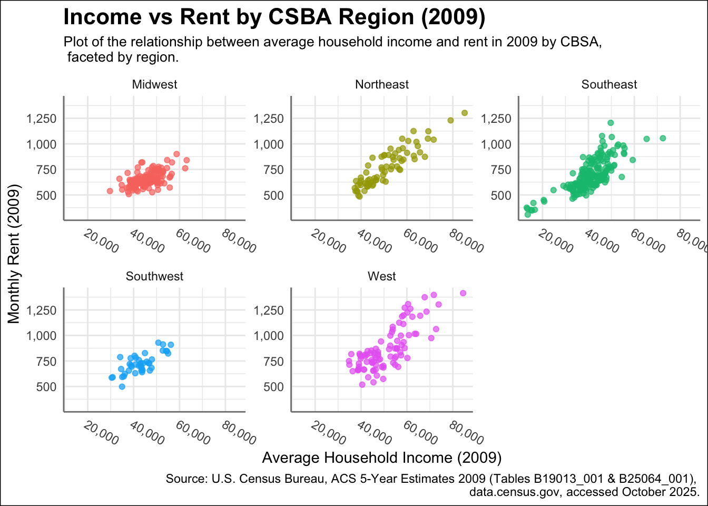
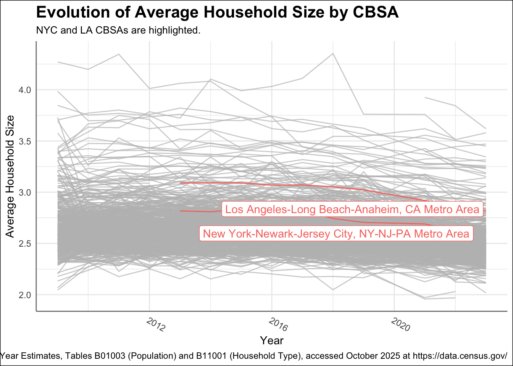
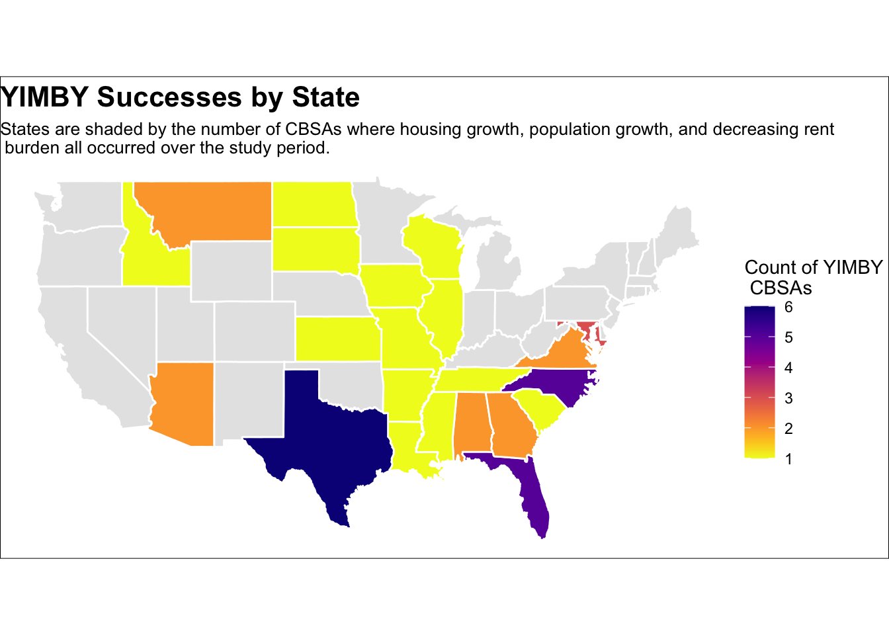

mp02
Task 1: Data Import
Task 2: Data Integration and Initial Exploration
1. Which CBSA (by name) permitted the largest number of new housing units in the decade from 2010 to 2019 (inclusive)?
The CBSA that permitted the largest number of new housing units is 26420 which is the Houston-The Woodlands-Sugar Land, TX Metro Area with a total of 482,075 new housing units.
2. In what year did Albuquerque, NM (CBSA Number 10740) permit the most new housing units?
The year that Albuquerque, NM Metro Area allowed the largest number of housing units in 2013 with a total of 2,606 units. Note: the results exclude COVID years (2020-2021) and post COVID years (2022-2023), due to any Pandemic effects.
3. Which state (not CBSA) had the highest average individual income in 2015? To answer this question, you will need to first compute the total income per CBSA by multiplying the average household income by the number of households, and then sum total income and total population across all CBSAs in a state. With these numbers, you can answer this question.

The state that had the highest average individual income in 2015 is New Hampshire (NH) with an average income of $27,378.29.
4. Data scientists and business analysts are recorded under NAICS code 5182. What is the last year in which the NYC CBSA had the most data scientists in the country? In recent, the San Francisco CBSA has had the most data scientists.
The last year in which the NYC CBSA had the most data scientist in the country was in 2015 with a total of 7,417,424.
5. What fraction of total wages in the NYC CBSA was earned by people employed in the finance and insurance industries (NAICS code 52)? In what year did this fraction peak?
The proportion of total wages earned in NYC CBSA by finance and insurance employees is 4.09%. The year with the highest proportion of wages earned by finance and insurance employees was in 2014 at 4.60%.
Task 3: Initial Visualizations
1. The relationship between monthly rent and average household income per CBSA in 2009.
2. The relationship between total employment and total employment in the health care and social services sector (NAICS 62) across different CBSAs.
The reason I switched to this new visual is because the proportion of health care and social services jobs has stayed pretty steady, usually less than 10% of total employment, across all regions, CBSAs, and years we looked at. There weren’t any big changes in this ratio over time. That’s why I decided to focus more on the regional breakdowns of health sector workers, to visualize the changes over time even if they were minimal.
3. The evolution of average household size over time. Use different lines to represent different CBSAs.

Task 4: Rent Burden
1.Pick a single Metropolitan Area and see how rent burden has changed over time
This table reports the Baltimore metro’s rent-to-income ratio each year—a value of 0.30 or above signals a rent-burdened typical household. “Baseline Ratio” is the starting year’s value, and “Delta vs Baseline” captures how this measure has changed since then.
Example (2023): In 2023, Baltimore-Columbia-Towson, MD Metro Area had a rent-to-income ratio of 0.198, meaning the typical household spent about 19.8% of income on rent—well below the 30% threshold for rent burden. The baseline ratio was 0.192, so the ratio increased by only 0.006, or 0.6 percentage points, from the starting year.
2. Highlight the Metro Areas highest and lowest with the highest and lowest rent burden
This table spotlights the five metropolitan areas where rent consumes the largest and smallest share of household income in the latest year. “Rent-to-Income Ratio” measures how much annual rent costs take from typical income, a ratio of 0.30 or higher signals rent burden. “Baseline Ratio” gives each metro’s starting value, and “Delta vs Baseline” shows how affordability has shifted over time.
Task 5: Housing Growth
1. Instantaneous Metric Table: CBSAs with Highest Instantaneous Housing Growth
2. Rate-Based Metric Table: CBSAs with Highest Housing Growth Relative to Population Gain (Permits Issued Compared to 5-Year Population Growth)
3. Composite Score Table: CBSAs Scoring Highest on Overall Housing Growth (Composite Metric Combining Instantaneous and Rate-Based Measures)
Task 6: Visualization
Plot 1: YIMBY Successes by State

Plot 2: Interactive YIMBY Success Scatterplot
Findings: Among 42 metropolitan and micropolitan areas identified as YIMBY successes, regions with above-average housing growth, population gains, and reductions in rent burden, the state-level heat map and interactive scatter plot illustrate that these successes are spread throughout the country, with each metro’s path combining housing growth, affordability, and migration in distinct ways; overall, the data reveal no single dominant relationship among the three metrics, demonstrating that while expanding supply is linked to positive outcomes, local factors drive a variety of approaches to improved affordability and population growth.
Task 7: Policy Brief
From NIMBY to YIMBY: A Collaboration to Unlock Local Growth
Housing availability remains a critical challenge across the United States, with some states experiencing more severe shortages than others. In recent years, the “YIMBY” (“Yes In My Backyard”) movement has gained traction as a counter to “NIMBY” (“Not In My Backyard”) opposition, advocating for policies that make it easier to build new homes and address affordability. Success stories from states like Texas, Georgia, and Arkansas show the positive impact of YIMBY reforms on local housing markets. This policy brief takes a closer look at the Danville, IL Metro Area and proposes a partnership with representatives from the McAllen-Edinburg-Mission, TX Metro Area recently recognized for YIMBY progress. Working together, these regions can develop and champion housing policies to help Danville become the next YIMBY success story.
Challenge
The Danville, IL Metro Area is facing persistent housing and population challenges that threaten its economic vitality. Over the last decade, rent burden has increased from 18.9% to 21.9% of household income, indicating growing pressure on residents’ affordability. At the same time, the region experienced a significant decline in population, losing over 8,400 residents as housing development stagnated and local economic opportunities dwindled. In contrast, the McAllen–Edinburg–Mission, TX Metro Area, a recent YIMBY success story, achieved a composite score of 7.8, saw its rent burden fall, and added more than 157,000 new residents through robust housing growth and pro-development reforms. The data clearly show that communities embracing YIMBY policies can reverse negative trends in affordability and population, while others risk further decline unless targeted policy action is taken.
Policy Solution & Sponsorship
Legislation Proposal: The proposed Federal Pro-Housing Partnership Act would provide financial incentives and technical assistance to municipalities that adopt YIMBY-friendly zoning reforms, streamline permitting processes, or implement upzoning measures. Participating local governments would be rewarded for increasing new housing supply, reducing rent burden, and expanding housing choice by updating land-use codes, allowing accessory dwelling units, legalizing “missing middle” housing (such as duplexes and triplexes), and removing barriers like excessive parking minimums or lot size requirements. Funding would be allocated based on demonstrated outcomes in new housing development and affordability improvements, ensuring that federal dollars incentivize real results.
Sponsors:

Primary Sponsor: Representative Monica De La Cruz (R-TX-15) from the McAllen–Edinburg–Mission, TX Metro Area (a recent YIMBY success with strong housing growth and falling rent burden).

Co-Sponsor: Representative Robin Kelly (D-IL-02)from the Danville, IL Metro Area (experiencing rising rent burden and population loss, and primed for pro-housing policy intervention).
These leaders will champion a pragmatic, outcome-based approach to addressing America’s housing crisis, enabling more communities to follow the proven path of YIMBY success.
Local Economic Impact
Key Industries in Each CBSA: To target legislative support and coalition partners, it is essential to understand the leading occupations driving each metro’s economy. Tables 6 and 7 (see below) present the top five industries by total employment for Danville, IL and McAllen–Edinburg–Mission, TX Metro Areas. Notably, sectors such as healthcare, retail, manufacturing, and transportation employ thousands of local residents and form the backbone of community prosperity.
High rent burdens in Danville pose direct threats to these vital groups—educators, nurses, retail clerks, and manufacturing workers face greater financial strain, diminished disposable income, and housing insecurity. In Texas, the YIMBY reforms are linked to stabilizing rents and supporting workforce retention in similar sectors.
Union & Industry Partners:
Within these key industries, major unions and trade organizations represent large voter blocs and influential advocacy networks. Partnerships with organizations like the National Education Association (teachers), SEIU and AFSCME (healthcare and government workers), United Food & Commercial Workers (retail), and Teamsters or AFL-CIO affiliates (transportation and logistics) can help drive support for pro-housing policies.
By lowering rent costs and encouraging new construction, this bill benefits union members and industry workers, promoting: -Higher disposable income for everyday expenses, education, and healthcare. -Enhanced employee retention and stability for local businesses, schools, and hospitals. -Creation of new jobs in construction, property management, and related fields.
In short, aligning pro-housing reforms with the interests of local workers and organizations builds both economic momentum and a powerful coalition for legislative action.
Call to Action
Passing this bill offers immediate and long-term benefits for both sponsor communities, as it will jump-start growth in Danville, IL and sustain progress in McAllen, Edinburg, Mission, TX. By empowering local governments with proven YIMBY reforms and uniting powerful partners, including unions, industry leaders, and municipal stakeholders, this legislation mobilizes broad support and delivers real economic advantages, housing security, and opportunity for working families. Now is the time to act and bring the proven benefits of abundant affordable housing to communities across the nation.
Data Sources Used
- ACS via tidycensus R package: https://www.census.gov/programs-surveys/acs
- Building Permits: https://www.census.gov/construction/bps
- BLS NAICS Codes: https://www.bls.gov/cew/classifications/industry/industry-titles.htm
- U.S. Congress Profiles: https://www.congress.gov/members